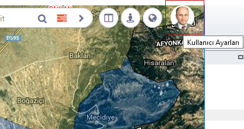
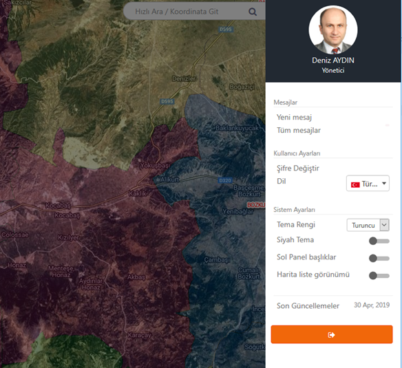
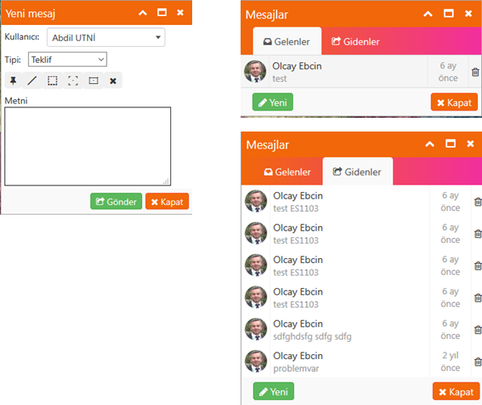
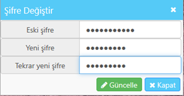
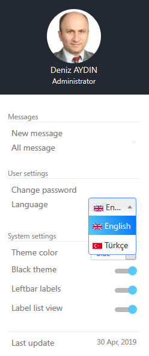
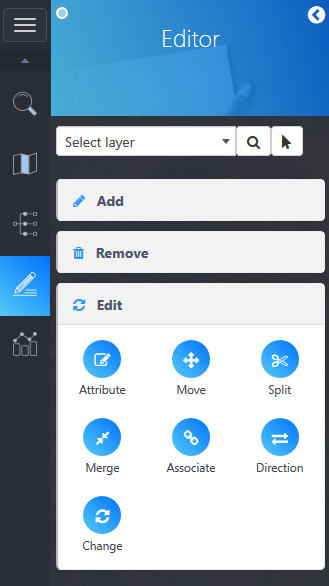
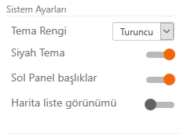

Kullanıcı ve Görünüm ayarlarını değiştirmek için sağ üst köşedeki kullanıcı fotoğrafının olduğu alana tıklamak yeterli olacaktır.

Fotoğrafa tıklandığında sağ tarafta boydan boya bir panel açılacaktır. Bu panelde Mesajlar, Kullanıcı Ayarları ve Sistem Görünürlük Ayarları olmak üzere alt alta 3 ayrı bölüm bulunmaktadır.

Mesajlar :
ODAGIS+ yazılımının bünyesinde "GeoMessaging TM" isimli bir bir mesajlaşma servisi yer almaktadır. Bu servis sayesinde kullanıclar koordinatlı geometrik objeleri de kullanarak birbirleri ile mesajlaşabilmektedir. Grup çalışmalarında oldukça faydalı olan bu hizmet sayesinde kurum içerisinde farklı bir programa ihtiyaç duyulmadan konumsal mesajlaşma mümkün hale gelmektedir.
Kullanıcıya yeni bir mesaj geldiğinde sağ üst köşedeki kullanıcı fotoğrafı üzerinde gelen mesak adedi rakamla gösterilerek kullanıcı uyarılır.
 Kullanımı :
Kullanımı :
1- "Yeni Mesaj" linkine tıklanır. Açılan pencerede öncelikle mesaj gönderilecek kullanıcı ve mesaj tipi seçilir.
2- Sonra Nokta, Çizgi, Alan obje butonları ile harita ekranı üzerinde istenilen işaretlemeler, çizimler yapılır.
3- Gerekirse yazılı metin olarak iletilmek istenen mesaj da yazıldıktan sonra "Gönder" düğmesine tıklanır.
4- "Tüm Mesajlar" butonuna basıldığında Gelen Mesajlar, Giden Mesajlar ayrı ayrı görüntülenebilir.
5- Mesajların üzerine tıklandığında varsa harita üzerinde çizilerek gönderilen objeler ve mesaj görüntülenir.
6- Listedeki mesajları silmek için mesajın yanındaki "çöp kutusu" ikonuna tıklanır.

Kullanıcı Ayarları :
Şifre Değiştirme:
Şifre Değiştir butonuna basıldığında açılan form üzerinden şifre değiştirilebilmektedir. LDAP entegrasyonu yapılan kurumlarda, kullanıcının kendi bilgisayarını açma şifresi aynı zamanda Coğrafi Bilgi Sistemine girişi de sağladığı için bu işleme gerek duyulmamaktadır.

Dil Değiştirme:
Seçme kutusundan istenilen dil seçildiğinde arayüz seçilen dilde görüntülenmeye başlanır.
 
Sistem Görünürlük Ayarları:
Web arayüzünün ana tema rengi, siyah arkafon, sol panel başlık yazılarının kaldırılması ve liste/buton görünümü gibi görünürlük ayarları ilgili kaydırma butonları kullanılarak yapılabilmektedir.
